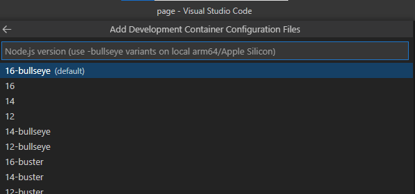

# 在 Container 內開發
在 docker container 內進行開發，好處是本機不用安裝開發必要的程式，比如說不用在本機安裝 Python 也可以開發、執行 Python 程式。
最簡單的執行方式
docker run --rm -it alpine |
就可以啟動進入 container 開發，不過這樣子的開發方式都依賴 CLI。
# Remote Container
這邊介紹一個 VSCode 套件 Remote Containers。可以進入 container 內，使用 VSCode 進行開發。
# Requirements
繼續之前，請先檢查自己的環境是不是符合需求
https://code.visualstudio.com/docs/remote/containers#_system-requirements
# Definition
準備完畢後，執行 VSCode 載入要開發用的資料夾，然後點選左下角綠色 "><" 圖示
點選 "Add Development Container Configuration Files…"
接著選取要建立的環境，如要開發使用資料庫的 Node.js 程式，就選 "Node.js & PostgreSQL"，如果你畫面上看到的沒有像圖片那麼多個，點一下 "Show All Definitions…" 可以顯示全部，或者輸入關鍵字搜尋。
選完主要開發的環境後，接著選取版本號。
如果你的電腦 CPU 是 arm64/Apple Silicon 的話（如 M1 CPU），請選 "bullseye" 的版本。

是否要增加其他而外功能，如果沒有的話按 "確定" 繼續。
# Setting
會看到資料夾內多了 ".devcontainer" 資料夾，裡面還有 devcontainer.json、Dockerfile 兩個檔案。
devcontainer.json 是設定檔，定義在 container 內時 VSCode 的設定。通常會改的有下面兩個區塊。
- settings 區塊設置 VSCode 的設定，可以參考 https://code.visualstudio.com/docs/getstarted/settings
- extensions 區塊設定在 container 內使用 VSCode 時，要安裝哪些 VSCode 的套件。
// Set *default* container specific settings.json values on container create. | |
"settings": {}, | |
// Add the IDs of extensions you want installed when the container is created. | |
"extensions": [ | |
"dbaeumer.vscode-eslint" | |
], |
另一個 Dockerfile 檔案，遠端連入開發的 container 就是由該檔案 build 而成。通常不需要更動，除非有要在 build 時安裝套件或者執行指令。
# Run
準備就緒後，再次點選左下角綠色「><」符號，選 "Reopen in Container"。
會開始 build 啟動 container，右下角會跳出提示，點選提示可以看到執行過程。
這是完成後的畫面，可以根據左下角綠色的狀態欄知道目前是不是在 container 內，如果顯示「><」表示在本機。原本在資料夾內的檔案在 container 內也可以看到，而且本機 /container 的檔案異動是同步的。
按 Ctrl+O （開啟檔案），可以選取要開啟在 container 內的檔案或是本機的檔案。
按 Ctrl+Shift+` 開啟新的終端機，可以在 container 內執行指令。
接著就可以在 container 內進行開發了。